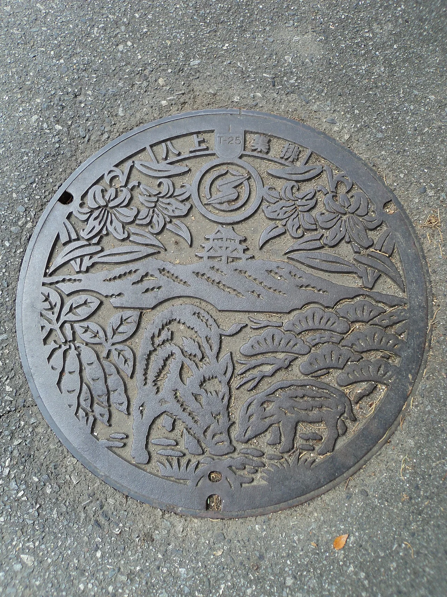
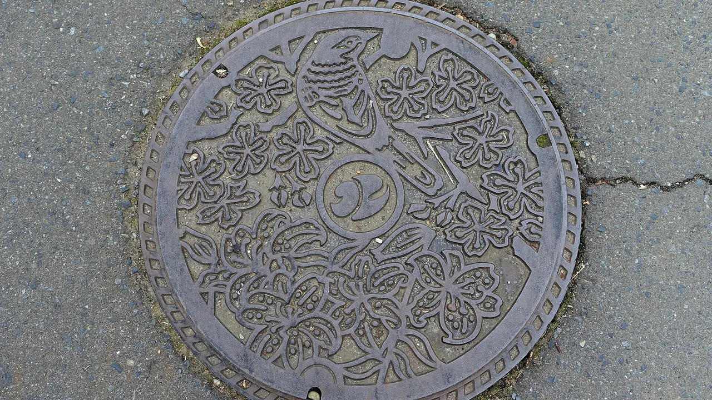

Manhole card di Jepang: panduan kolektibel gratis
Jepang telah mengubah penutup saluran airnya menjadi seni publik — dan menjadi permainan koleksi gratis berskala nasional. Untuk ratusan penutup manhole desain tersebut terdapat kolektibel yang sesuai: sebuah manhole card (マンホールカード). Gratis, didapatkan langsung di tempat, dan bagian belakangnya bahkan mencetak koordinat lintang dan bujur persis dari penutup aslinya sehingga kamu bisa berdiri di atasnya. Panduan ini membahas apa itu kartu-kartu tersebut, cara mendapatkannya, sistem "lot" yang terus memperbesar katalog, desain terkenal per kota, dan bahasa Jepang yang akan kamu gunakan di loket.

Apa itu manhole card
Sebuah manhole card (マンホールカード) adalah kartu kolektibel resmi untuk salah satu penutup saluran "manhole desain" Jepang — penutup saluran dekoratif yang dipesan oleh kota-kota untuk memamerkan kastil, festival, bunga, maskot, dan landmark lokal mereka. Kartu-kartu ini diterbitkan bersama oleh GKP (下水道広報プラットホーム, Japan Sewage Works PR Platform) bersama pemerintah daerah atau biro air yang memiliki penutup tersebut. Program ini diluncurkan pada 2016 dan telah berkembang menjadi budaya koleksi yang nyata, dengan para pelancong membangun rute perjalanan khusus untuk mengambil kartu-kartu ini.
Setiap kartu adalah potongan kertas kartu berukuran kecil dan konsisten dengan dua sisi yang berguna:
- Depan — foto penutup manhole asli, beserta lokasi nyata tempat ia berada.
- Belakang — penjelasan tentang motif dan asal-usul desain (mengapa kastil, bunga, atau maskot itu), ditambah lintang dan bujur manhole tersebut sehingga kamu bisa berjalan menuju penutup aslinya.
Koordinat di bagian belakang itulah yang mengubah kartu menjadi perburuan harta karun: ambil kartu di titik distribusi, lalu gunakan koordinat lintang/bujur untuk menemukan dan memotret penutup aslinya, yang biasanya hanya berjarak beberapa langkah. Kartu-kartu ini gratis — tidak dijual, tidak dikirim lewat pos, dan diberikan satu per orang, langsung di tempat, di titik pengambilan lokal tertentu.
Cara mengoleksinya
Aturannya sengaja dibuat sederhana dan sama di mana-mana: datang langsung selama jam buka dan minta. Tidak ada sistem reservasi, tidak ada pengiriman pos, dan tidak ada pengambilan melalui perantara — aturan hadir langsung adalah inti dari program ini, yang dirancang untuk membawa pengunjung ke kota yang memiliki penutup tersebut.
| Langkah | Yang kamu lakukan | Catatan |
|---|---|---|
| 1 | Temukan kartu di daftar resmi GKP | Cari berdasarkan prefektur di gk-p.jp/mhcard — ini adalah katalog langsung yang selalu diperbarui |
| 2 | Catat titik distribusi dan jam bukanya | Biasanya kantor kota, biro air/saluran, atau pusat informasi wisata |
| 3 | Datang langsung selama jam buka | Tanpa reservasi, tanpa pemesanan pos, tanpa mengirim orang lain untuk mewakilimu |
| 4 | Minta kartu kepada staf | Satu kartu gratis per orang — itulah batas standarnya |
| 5 | Opsional: gunakan koordinat lintang/bujur di bagian belakang | Berjalan ke penutup asli di dekatnya dan fotonya untuk melengkapi koleksi |
Titik distribusi dan jam buka bisa berubah — kartu yang tahun lalu diambil di pusat wisata mungkin kini berpindah ke kantor kota, dan beberapa titik tutup pada akhir pekan atau hari libur. Selalu konfirmasi titik pengambilan dan jam buka terkini di daftar GKP sebelum merencanakan hari perjalananmu.
GKP menyimpan katalog resmi manhole card yang selalu diperbarui, dapat dicari berdasarkan prefektur, dengan titik distribusi dan jam buka setiap kartu. Lot baru ditambahkan setiap gelombang, jadi daripada mencetak angka yang cepat usang, kami langsung menautkan ke daftar langsung — gunakan untuk merencanakan ruteму, lalu kembali ke sini untuk konteks perjalanan dan frasa bahasa Jepang.
Berapa banyak yang ada, dan sistem "lot"
Kartu baru tidak dirilis satu per satu — melainkan dalam lot (弾, dan, "gelombang"). GKP mengumumkan sekumpulan jenis kartu baru pada tanggal tertentu, dan katalog kumulatif bertambah dengan setiap lot. Karena itu, angka total mana pun hanyalah potret sesaat, bukan angka permanen.
Gelombang terbaru yang telah diverifikasi adalah Lot 28 (第28弾): 42 jenis kartu baru, didistribusikan mulai 24 April 2026, termasuk 11 kotamadya yang pertama kali masuk. Menghitung semua yang dirilis hingga dan termasuk gelombang tersebut, total kumulatif per Lot 28 (April 2026) adalah 1.264 jenis kartu dari 769 kotamadya dan 4 organisasi. Sertakan "per Lot 28 / April 2026" pada angka apa pun yang kamu kutip, karena lot berikutnya akan mengubahnya.
- Dirilis dalam lot — katalog bertambah sesuai jadwal, bukan secara terus-menerus.
- Per Lot 28 (Apr 2026) — 1.264 jenis kartu, dari 769 kotamadya + 4 organisasi.
- Cakupan tidak merata — tidak ada ketentuan "X kartu per prefektur", dan tidak setiap kota memilikinya. Beberapa prefektur kaya kartu, yang lain hanya memiliki segelintir.
- Daftar GKP adalah sumber kebenaran — untuk jumlah terkini dan kota mana saja yang terdaftar, cek katalog resmi, bukan angka beku di sebuah blog.
Desain terkenal per kota

Berikut adalah kota-kota manhole desain terkenal yang penutupnya telah muncul dalam program kartu. Gunakan sebagai inspirasi, tetapi selalu konfirmasi titik distribusi dan jam buka terkini di daftar GKP sebelum bepergian — lokasi pengambilan bisa berpindah antar gelombang.
| Kota | Prefektur | Wilayah | Desain menampilkan | Tempat distribusi | Panduan gratis |
|---|---|---|---|---|---|
| Sumida Ward | Tokyo | Kanto | Motif "Great Wave" karya Hokusai | ward / fasilitas wisata | Tokyo → |
| Hiroshima City | Hiroshima | Chugoku | Carp Boy (maskot baseball) | kota / fasilitas saluran | Hiroshima → |
| Kobe | Hyogo | Kansai | motif hewan kebun binatang | kota / fasilitas wisata | Hyogo → |
| Toyama City | Toyama | Chubu | motif desainer lokal | pariwisata / biro air | Toyama → |
| Sendai | Miyagi | Tohoku | motif desain kota | titik kota | Miyagi → |
| Kagoshima City | Kagoshima | Kyushu | motif kota | biro air / saluran | Kagoshima → |
| Kitakyushu | Fukuoka | Kyushu | motif kota | biro air & saluran | Fukuoka → |
| Naruto | Tokushima | Shikoku | motif kota | titik kota | Tokushima → |
Kunjungan untuk mengambil kartu dapat digabungkan dengan wisata biasa: titik distribusi biasanya berada di tempat yang memang akan kamu lewati — kantor kota, pusat wisata, fasilitas di sekitar stasiun — dan penutup aslinya ada di jalan terdekat. Pilih satu prefektur sebagai basis, baca panduan gratisnya untuk mengetahui apa lagi yang bisa dilihat dan dimakan, lalu rangkai beberapa pengambilan kartu dalam satu hari.
Perbedaannya dengan Pokéfuta
Mudah untuk menggabungkan keduanya, jadi perlu dibedakan dengan tepat: manhole card dan Pokéfuta adalah dua program yang terpisah. Pokéfuta (ポケふた) adalah penutup manhole bertema Pokémon yang dijalankan oleh The Pokémon Company di bawah Pokémon Local Acts; manhole card standar adalah program kartu manhole desain umum milik GKP. Keduanya sedikit tumpang tindih — beberapa Pokéfuta memiliki manhole card yang terkait — tetapi itu adalah pengecualian, bukan aturan. Jangan berasumsi bahwa setiap Pokéfuta memiliki kartu, atau bahwa setiap kartu adalah Pokéfuta.
Jika kamu secara khusus menginginkan penutup bertema Pokémon, gunakan sumber daya dari sisi Pokémon sendiri, bukan daftar kartu GKP. Kami menyediakan panduan Pokéfuta lengkap per prefektur →, dan peta resminya ada di local.pokemon.jp/en/manhole.
Beberapa tautan di atas adalah tautan afiliasi. Kami mungkin mendapatkan komisi tanpa biaya tambahan bagimu. Kami hanya mencantumkan layanan yang kami gunakan sendiri.
Bahasa Jepang yang akan kamu gunakan
Mengoleksi kartu menempatkanmu di hadapan staf kantor kota dan pusat wisata, di mana beberapa kata yang tepat membuat permintaan menjadi mudah — dan menandakan bahwa kamu tahu persis apa yang kamu minta.
| Bahasa Jepang | Cara baca | Arti |
|---|---|---|
| マンホールカード | manhōru kādo | manhole card — kolektibel itu sendiri |
| 下水道 | gesuidō | saluran pembuangan — sistem tempat penutup ini berada; sering ada dalam nama kantor |
| 配布 | haifu | distribusi / pembagian — digunakan untuk "di mana kartu dibagikan" |
| 無料 | muryō | gratis — kartu selalu muryō |
| ご当地 | gotōchi | "edisi lokal / kekhasan lokal" — konsep di balik desain-desain ini |
| デザイン | dezain | desain — seperti dalam "manhole desain" |
| 第〇弾 | dai-X-dan | lot / gelombang ke-X (mis. 第28弾 = Lot 28) |
| 緯度経度 | ido keido | lintang & bujur — dicetak di bagian belakang untuk menemukan penutup aslinya |
Ingin kosakata ini melekat? Kuis pertempuran JLPT gratis melatih kosakata perjalanan dan budaya seperti ini dengan pengulangan berjarak.
Manhole card dapat dirangkai dengan permainan koleksi berbasis lokasi lain di Jepang: Pokéfuta (penutup manhole Pokémon) →, manhole Gundam →, dan ziarah anime (seichi junrei) →. Banyak pelancong menyelesaikan beberapa di antaranya dalam satu prefektur.
Pertanyaan umum
T. Apakah manhole card gratis?
J. Ya. Manhole card sepenuhnya gratis. Diterbitkan oleh GKP bersama pemerintah daerah dan biro air, dan tidak pernah dijual — kamu cukup memintanya di titik distribusi.
T. Bagaimana cara mendapatkannya?
J. Temukan kartu yang kamu inginkan di daftar resmi GKP, catat titik distribusi dan jam bukanya, lalu datang langsung ke sana selama jam buka untuk meminta kepada staf. Banyak titik adalah kantor kota, biro air/saluran, atau pusat informasi wisata.
T. Bisakah saya mendapatkan manhole card lewat pos atau online?
J. Tidak. Tidak ada pengiriman pos dan tidak ada pemesanan online — kartu hanya dibagikan langsung di titik pengambilan lokal tertentu, tanpa reservasi dan tanpa perantara. Aturan hadir langsung adalah bagian dari tujuan program untuk menarik pengunjung ke setiap kota.
T. Berapa banyak manhole card yang bisa saya dapatkan?
J. Satu kartu gratis per orang di setiap titik distribusi. Itulah batas standarnya.
T. Berapa banyak manhole card yang ada?
J. Per Lot 28 (第28弾, April 2026), total kumulatifnya adalah 1.264 jenis kartu dari 769 kotamadya dan 4 organisasi. Lot baru dirilis secara berkala, sehingga jumlahnya terus bertambah — cek daftar resmi GKP di gk-p.jp/mhcard untuk jumlah terkini.
T. Apa yang tercetak di kartu?
J. Bagian depan menampilkan foto penutup manhole asli beserta lokasi nyatanya. Bagian belakang menjelaskan motif dan asal-usul desain serta memberikan koordinat lintang dan bujur manhole tersebut, sehingga kamu bisa berjalan menuju penutup aslinya.
T. Apakah kartu Pokéfuta sama dengan manhole card?
J. Tidak. Pokéfuta (penutup manhole Pokémon) dan manhole card GKP standar adalah program yang terpisah. Beberapa Pokéfuta memiliki manhole card yang terkait, tetapi sebagian besar tidak, dan sebagian besar kartu GKP tidak ada hubungannya dengan Pokémon. Untuk penutup bertema Pokémon, gunakan peta Pokémon resmi.